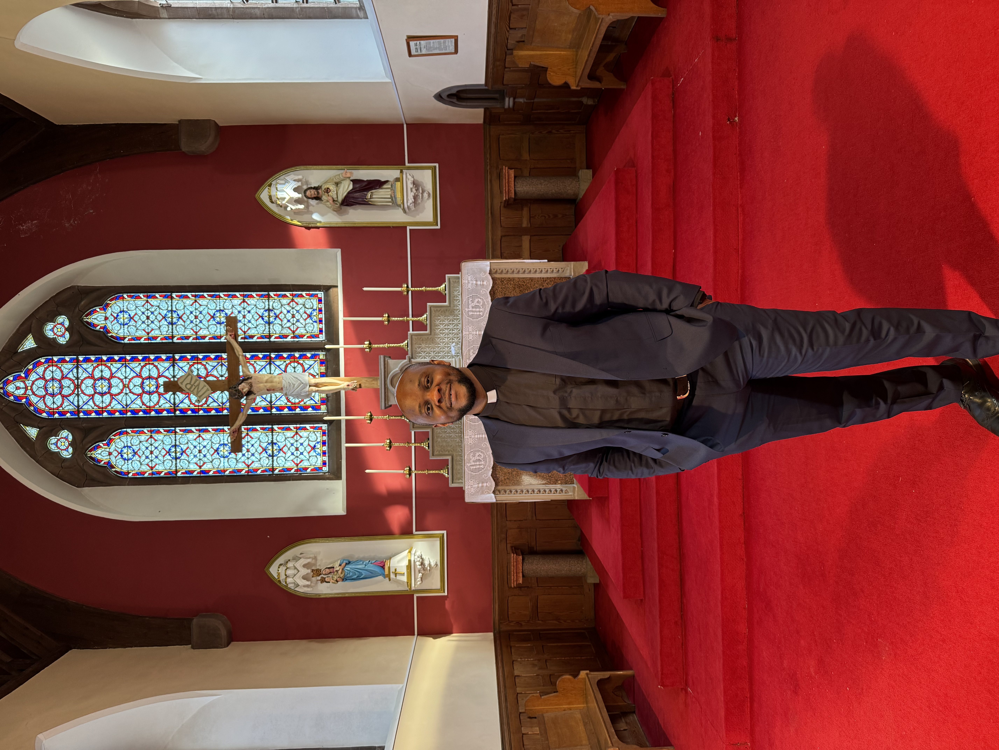

A priest forever
With grateful hearts, we give thanks to God.
Fifteen years of priestly ministry is a testimony of God’s grace, fidelity, sacrifice and loving service to His people. This anniversary page is created so that well-wishers can confirm attendance and leave prayers, memories, felicitations and congratulatory messages.
You may write a short message of thanksgiving, a personal memory, a blessing or a prayer for continued fruitfulness in the vineyard of the Lord.

“You are a priest forever, according to the order of Melchizedek.”Psalm 110:4
Gregorian chants and Sacred Songs
Sacred music & songs
Use the button below to play or pause the Gregorian chants and songs. Browsers usually require visitors to press play before music can begin.
RSVP Attendance
Please complete the RSVP form using the button below.
Complete RSVP FormLeave a Felicitation
Write Your Congratulatory Message
Please click the button below to leave your congratulatory message. Your message will be safely recorded.
Leave a Felicitation MessageLocation
Parish / Church map
St. Mary's RC Church, Beauly, IV4 7AU, Scotland, United Kingdom.
Location
Reception Hall map
Phipps Hall, Station Road, Beauly, IV4 7EH, Scotland, United Kingdom.